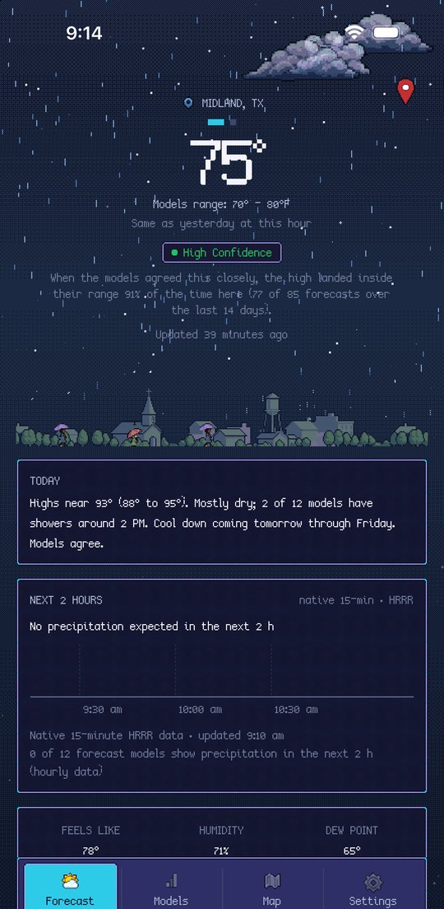
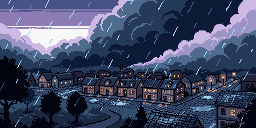
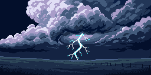
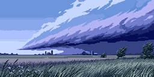
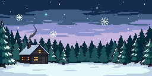
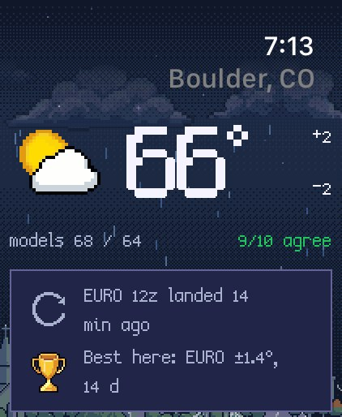

Rain brings out the umbrellas, snow builds a snowman, and storms flash over the rooftops. Underneath the pixel art is a serious forecast: up to 17 weather models side by side, so you can see when they agree.

Rain on the way, a cold front, a storm warning: each notification arrives with hand-made pixel art. Long-press it and the scene moves.





The same town, hourly and daily forecasts, model agreement and warnings, with complications for your watch face.
The beta is free through Apple's TestFlight app. Beta testers get every feature, including the deep tools for weather nerds. No ads, and no data collected.
Join the free beta